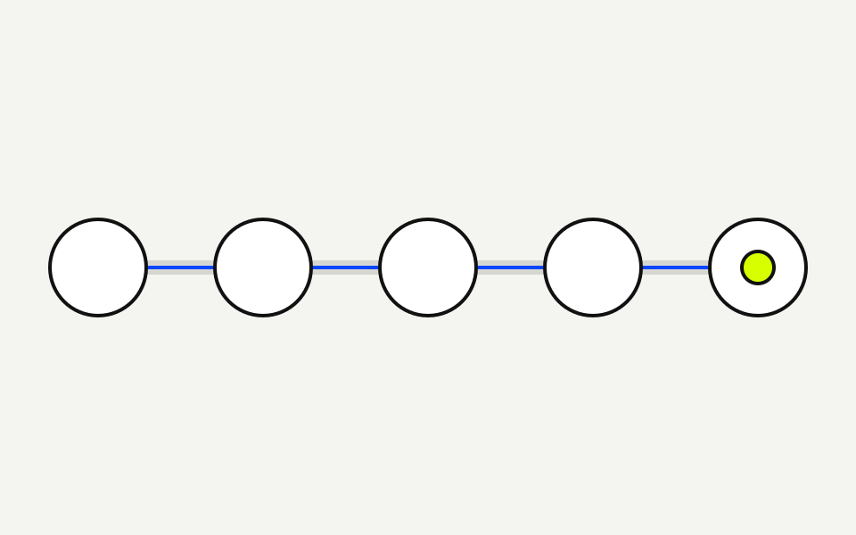
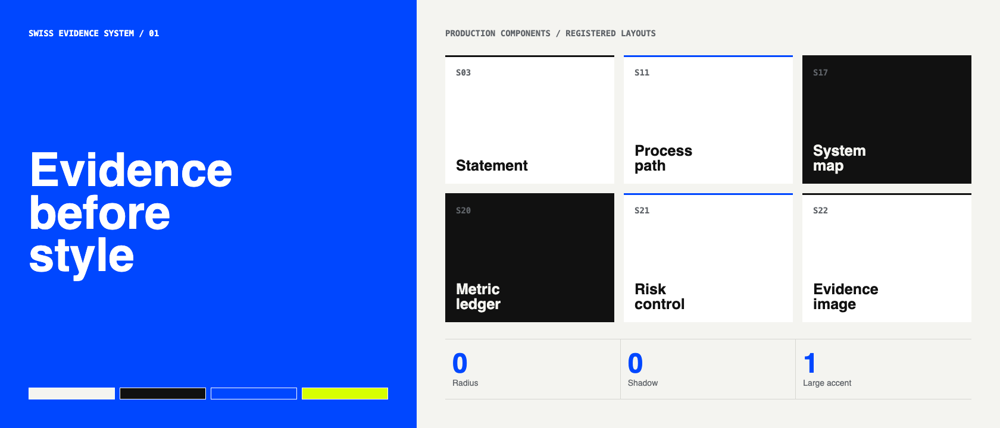

Design / Production SliceSource-backed
Evidence before style
A production deck must make truth, structure, and visual judgment inspectable.
01 / ContrastStructure -> Decision
A contract fixture proves structure. A production deck proves decisions.
The target is not more decoration. It is a complete reader path with evidence, hierarchy, and a blocking review gate.
02 / Adoption pathLicensed + inspectable
Inspect. Adopt. Adapt. Bind. Validate.
01Inspect
License and runtime boundary
02Adopt
MIT execution primitives
03Adapt
Design-owned visual grammar
04Bind
Sources and derivations
05Validate
Render and reviewer gates
03 / SystemFail closed
One chain protects truth from source to review.
Each stage is inspectable. A broken hash, missing reference, failed render, or unresolved review blocks readiness.

04 / InventoryCode-derived
9 slides. 9 layouts. 9 source-backed rows.
9Slides
9Unique layouts
9Source-backed rows
Derived by calculations/inventory.mjs from source/layout-inventory.csv.
05 / BoundaryAdopt != Copy
Adopt MIT code. Adapt AGPL concepts.
Adopt
- MIT license notice
- Base slide primitives
- Offline keyboard runtime
Adapt
- Semantic layout discipline
- Projection legibility
- Image-slot and rhythm rules
06 / EvidenceRuntime capture
The component system is visible evidence.

Local Chromium capture of design-systems/swiss-deck/components.html.
07 / ControlConjunctive gate
Ready is a conjunction, not a style label.
- PASSSource and output hashes
- PASSCalculation and deterministic test
- PASSResponsive and reduced motion
- PASSDesktop and narrow visual taste
08 / DecisionShip gate
Ship only when every applicable gate passes.
Accuracy blocks beauty from inventing. Review blocks correctness from shipping ugly.